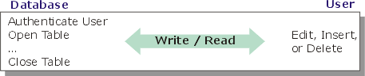

Comparing Desktop and Web Applications
Connected and Disconnected Architectures
Typically, when an application user opens a local database, after authentication, the table remains open for the duration of the session. The user is directly connected to the database.
Connected Architecture of a Local Database User

The remote web browser user must re-authenticate and reopen the database with each read or write transaction. The Application Server (WAS) acts as an agent for the user, opening and closing tables, reading and writing data. Because of the additional processing and time required for page transmission, a disconnected web application will be slower than a desktop connected application.
Disconnected Architecture of a Remote Browser User

The Processing Steps of a Web Application
The user navigates to a new record by clicking on a hyperlink.
The web browser opens a connection to the Application Server.
The web browser requests a page from Application Server.
The Application Server receives the request.
The Application Server opens the table and builds an HTML page that contains the data.
The Application Server closes the table.
The Application Server sends the HTML page back to the web browser.
The Application Server and the web browser disconnect.
The web browser displays the HTML page that was received.
Write Conflicts
Another significant difference between desktop and web applications has to do with write conflicts. When a user of a desktop application reads a record, the record is locked. Other users cannot update the record, so conflicts are unlikely. This is a "connected" application.
With a "disconnected" web application, the user receives a "snapshot" of the record at a particular instant. There is nothing to prevent a second user from updating the record while the first user is working. The solution to this problem is to cache the record's original field values in the page. When the first user returns the page to do an update, if the record's current values are different from the values cached in the web page, an error occurs. The first user then receives a new page with an error message saying that the update was not completed. The page now contains the record's current field values.
Concurrent Users
Web and desktop applications have different definitions of the term "concurrent users". Concurrent users of a desktop application will be connected to the database and have one or more tables open all of the time. Web application users constantly connect and disconnect. The result is that in a web application "concurrent users" refers to the number of open sessions. The number of users simultaneously reading or writing to the database will be a much smaller number.
See Also
Limitations
Web publishing applications only.